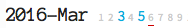

Mar 06,2016 lr-notebook/
Welcome page instructions
Welcome page instructions
Set up your own notebook
Note this won't work until Lektor app v2.0 is released.
Until then, use dev version per the lr-notebook readme.
Until then, use dev version per the lr-notebook readme.
- Download the lr-notebook zip or fork the repo.
- Get the Lektor app.
- Run Lektor.app, use the button to open the file nb.lektorproject in your lr-notebook folder, then to view. That's it!
Create a folder
- Browse to the Folders page.
- Click top-right ✎ button to open admin interface.
- Click "Add Page" button under "Page Actions", choose a Name, and save via "Add Child Page" button.
Create a log entry
- Browse to desired log month.
- Click on the day you want to add.
- Edit contents.lr file to set
_hidden: no - Refresh the month page, click the newly active link


Share
If hosting your lr-notebook on github, use Travis-CI to build a static site every commit and deploy it to a gh-pages branch for free public hosting. This is not password protected.
- Read these instructions, and watch the YouTube tutorial.
- Update nb.lektorproject with ghpages target
- Set .travis.yml to install dev version of Lektor
- Configure travis-ci with
LEKTOR_DEPLOY_USERNAMEandLEKTOR_DEPLOY_PASSWORD, per the tutorial @ 1:41 - Optional: set up a Slack integration to notify a channel each build.

{kind=link}
{kind=link}
{kind=link}
{kind=link}
{kind=link}
{kind=link}
folder: lr-notebook/
tags: None (+)
author unknown.